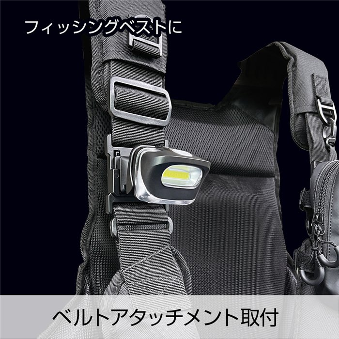
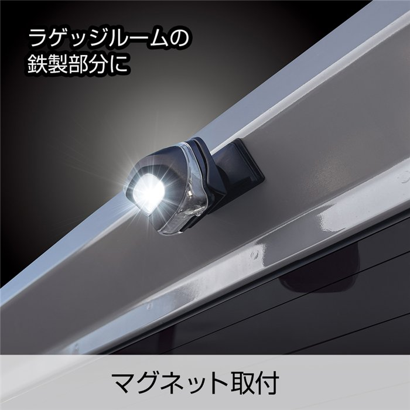
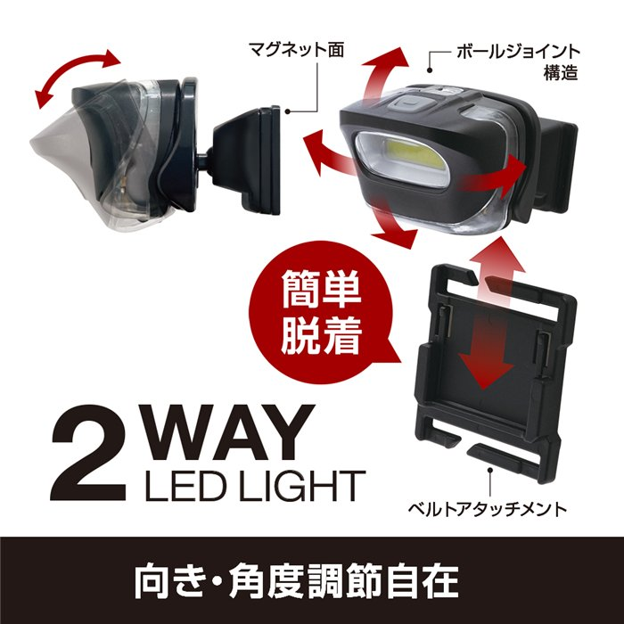
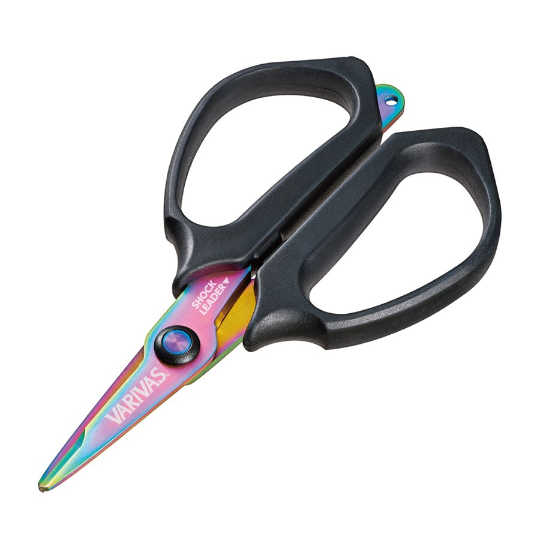
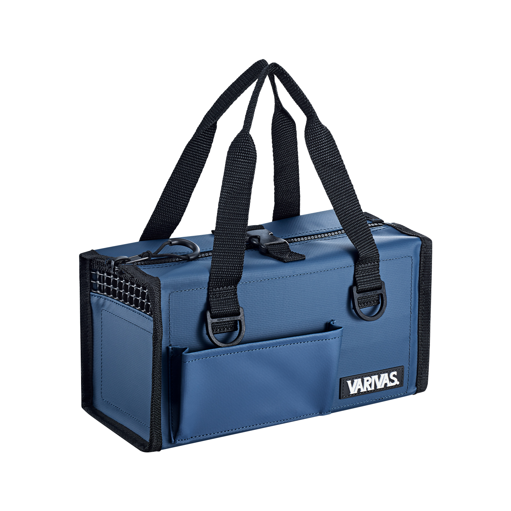

VISOA 2wayLEDライト UA32
VISOA UA32は、カー用品メーカーの槌屋ヤックが出している、車内でも車外でも使える2wayのLEDライトです。
フィッシングベストやショルダーバッグのベルトに付けて釣りに使え、外せばマグネットで車内にも付けられるのが最大の特徴。夜釣りの準備から釣りの最中まで、1つで使い回せます。

画像出典:槌屋ヤック公式HP
スペック
- ブランド
- VISOA（ビソア）
- メーカー
- 槌屋ヤック
- 品番
- UA32
- 電源
- 単4形乾電池×3本（別売り）
- 適合ベルト幅
- 35〜50mm
- カラー
- ブラック
- 価格
- オープン価格
▼今すぐチェック

VISOA UA32の特徴
釣りでも車でも使える、2wayのLEDライト
-
ベストやバッグのベルトに付けられる
ベルトアタッチメントで、フィッシングベストやショルダーバッグのベルト（幅35〜50mm）に取り付けられる。両手を空けたまま手元を照らせる。
-
外してマグネットで車内に
ブラケットからライト部分を外して、マグネットで車内の金属部分に付けられる。夜の車内での準備や、ラゲッジルームの片付けに便利。
-
向きと角度を自由に変えられる
ボールジョイントの構造で、ライトの向きと角度を自由に調節できる。ブラケットからの取り外しも簡単。
VISOA UA32の使い方
釣り場では、フィッシングベストの胸のベルトに付けて、角度を少し下に向けて手元を照らすのが基本です。ルアー交換やノットを組む時に、両手を使ったまま作業できます。
車に戻ったら、ライト部分を外してマグネットでラゲッジルームの金属部分に付ければ、タックルの片付けや着替えの時の作業灯になります。電池は単4形乾電池3本（別売り）なので、予備の電池を一緒に持っておきましょう。
VISOA UA32がおすすめの人
夜のアジング・メバリングやシーバスなど、暗い時間に釣りをする人に向いています。車で釣り場に行き、車内で準備をすることが多い人にもおすすめです。
釣りと車の両方で使えるので、ライトを何個も持たなくてよいのが強み。手元が明るいとルアー交換やトラブルの対応が早くなり、よく釣れる時合いを逃しにくくなります。
ワンポイント
水面を照らすと魚が警戒することがあるので、釣りの最中はライトを足元より手元側に向け、使う時だけ点けるようにしましょう。常夜灯のポイントでは、ほかの釣り人の邪魔にならないよう向きにも気をつけると安心です。
ここが使いやすい！3つのポイント
VISOA UA32の使いやすいポイントを紹介します。
フィッシングベストのベルトに

ベルトアタッチメントで、ベストやショルダーバッグのベルトに取り付けられます。
マグネットで車の鉄の部分に

ライト部分を外して、マグネットでラゲッジルームなどの金属部分に付けられます。
向き・角度を自由に調節

ボールジョイントで向きと角度を変えられ、ブラケットからも簡単に外せます。
画像出典:槌屋ヤック公式HP
▼今すぐチェック
VISOA UA32とあわせてチェックしたいアイテム
-
 フローティングベスト X-0III
ima
詳細はこちら＞
フローティングベスト X-0III
ima
詳細はこちら＞
ライトを付けるならこんなベストに。ポケットの多いフローティングベスト。
-

ピースパッ！シザース MAGNUM バリバス 詳細はこちら＞夜の釣りでも手元で使いやすい、太糸対応のPEシザース。
-

ツールボックス VAAC-85 バリバス 詳細はこちら＞小物をまとめて収納できるツールボックス。